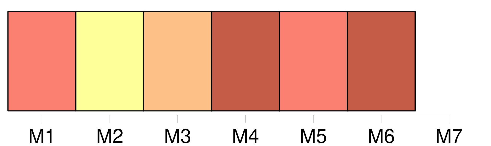
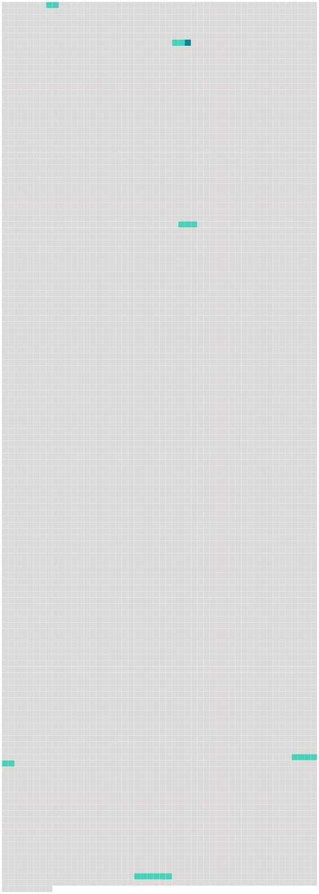

Longueur nb maillons : 6 mentions |
  |
Dès qu’ il y avait entre eux [quelque brouillerie] , tout s’ en ressentait, les divertissemens de la cour étaient suspendus, et si le roi venait le soir chez la reine, il s’ asseyait dans un coin sans dire un mot, et sans que personne osât lui parler. [5 phrases]
» [28 phrases] Plus que jamais il se mêla de [leurs nombreuses querelles] , non plus pour les accommoder, mais pour les aigrir. [107 phrases] Cette fois, instruit par l’ expérience, il avait compris que, tant que Louis XIII pourrait voir cette ravissante figure et approcher de ce noble cœur, avec [des brouilleries plus ou moins longues] , Mme de Hautefort reprendrait toujours son empire, et que, pour la détruire, il fallait lui faire quitter la cour et Paris. [16 phrases] Elle se rappelait que, dans plusieurs de [ses querelles avec son royal amant] , souvent elle lui avait dit que de l’ humeur dont elle le connaissait, elle s’ attendait à être un jour ou l’ autre chassée de la cour par la jalousie du cardinal, et que Louis XIII lui avait toujours répondu que cela ne serait jamais, et que, reçût -elle un pareil ordre, il la conjurait de ne pas y ajouter foi et de ne croire qu’ à ce qu’ il lui dirait lui -même. |
 |
La ressource peut être téléchargée sur la page Ortolang
Si vous avez des questions ou vous voyez des erreurs, merci d'envoyer un mail à silvia.federzoni89@gmail.com
Site développé par S. Federzoni (contact)